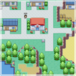
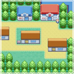
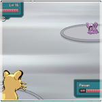

About Pokémon World Online

Join a world full of ambitious trainers. Capture and build your team. Earn gym badges and supplement your reputation. Forge powerful guilds and defeat all who oppose you. Claw your way through the ranks to become the top trainer and find the rarest Pokemon the world has seen.
Welcome to Pokémon World Online, a free MMO fanmade game with an active community, a fully realized Kanto and Johto region, and constant content updates. We hold events with frequency, from mapping contests to major events containing all new areas and, of course, rare Pokemon to capture for yourself. Many of our staff members gather feedback and interact with players directly, making this a social and interactive development process.
Befriend and battle anyone you see; you can fight, hunt or trade your way to the top. Customize your Pokémon with egg moves and a fully working EV and IV system; explore the world and discover many quests and details. As a trainer, you can master the Safari Zones and best the Battle Tower - best of all, there is always improvement or something new coming around the corner for our community.
Pokémon World Online (PWO) is a family-oriented game. While enjoying the game you may encounter people from all walks of life, from any background, and from just about any country on Earth.
While our game requires players to be 18 years of age or older to register an account, it is perfectly acceptable for a younger person to join us with parental permission.
While PWO is primarily English and Portuguese, we encourage and boast a community that comes from all walks of life. There is a wide variety of dialects and languages that vary day-to-day depending on our current players; South-East Asian languages are also often spoken, as are European languages such as Dutch and German.
New players begin with a tutorial map and are, like our favorite hand-held games, challenged to battle their way through a series of Gyms in order to be eligible to battle world-class trainers. On top of this, PWO provides unlimited access to player-versus-player (PvP) encounters. While it is not necessary to participate in PvP battles, all players eventually will find themselves challenging computer-operated Gym leaders and trainers. For those less inclined to battle, PWO offers a wide variety of Pokemon to hunt and evolve, some of which are easier to find depending on the time of day and location. Search in the grass and sea, be it by fishing, walking or surfing to find a prize Pokémon.
PWO has been in production since 2008 and has made large leaps in progress since its quiet birth. A friendly, welcoming community awaits new players, and a competent staff is on duty to ensure quality entertainment. If you are a fan of Nintendo's hand-held games, you will thoroughly enjoy our interpretation.
The time for heroes is upon us! You will be granted a Pokedex to help catalogue your data so you may share it with Professors and Breeders all over the world, to help their research. It is your duty to capture, tame, and befriend these Pokémon. Through your efforts, people and Pokémon may one day live together in peace.
The time for you to achieve glory and respect is now. Carve your name into the history books, and prove your might to the universe! Go forth, and claim your destiny! A Trainer has been born!
Help
If you have any questions or come across any problems, why not have a read of the FAQ?
If you don't find anything on there, why not do a search via the entire Wiki? No result? - Visit our Forums and see if the answer you require is there.